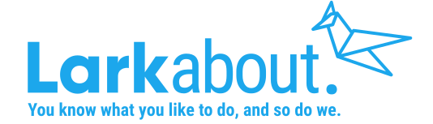

Project Overview
Timeline:
4 Weeks
Tools:
Summary
In this project, students were asked to design a mobile app built to address the needs of modern travelers. As a user researcher, I wanted to understand the pain points of how people plan to travel so I would first be able to develop a user persona and empathy for the problem space, and then address a solution.
Role + Responsibilities
I was the project manager and UX researcher/designer throughout the self-guided project; from planning, researching, definition/ideation, wireframing, prototyping and user testing. I was also given the opportunity to collaborate with Audra M. (UX/UI designer), to develop research and interview plans during the initial stages of the project.
Deliverables
I was the project manager and UX researcher/designer throughout the self-guided project; from planning, researching, definition/ideation, wireframing, prototyping and user testing. I was also given the opportunity to collaborate with Audra M. (UX/UI designer), to develop research and interview plans during the initial stages of the project.
User Research
A diverse set of frequent travelers were selected to participate in a interview designed to determine general pain points users were having during travel planning.
Responses from the interviews were then mapped into an affinity diagram to identify similarities and other common themes within specific categories. This data was then used to define a user persona and empathy map.
Definition + Synthesis
Frequent travelers (4 or more times a year) are confident in their choices regarding airlines and transportation due to member programs (miles, bonuses, etc.) and existing foundations of trust. They instead need a way to set up their preferences to simplify travel planning and provide an easily digestible array of activity options at their destination.
These can include:
- Attractions of interest
- Distance + proximity
- Use of time
- Financial impacts + value for money
- Specific accommodations (i.e. travelling with pets, travelling alone or with spouse)
Defining the Problem
This is app is designed to provide frequent travelers with a personalized and clearly defined array of activities and attractions to visit while on vacation. We have observed that travelers are overwhelmed by the amount of options available to them and seek to refine based on their unique profiles, key concerns, and travel considerations.
How might we proactively provide these travelers with a system of trustworthy, affordable and personalized recommendations to improve the planning process and result in new experiences and the creation of new memories?
Ideation
A series of direct and indirect competitors were identified within the travel/activity planning market. They were then evaluated on current features and possible gaps in their user experience and offerings. These key points were then used for brainstorming development for LarkAbout and determining complexity and impact of potential features of the app.
Value Proposition
LarkAbout filters out the noise of vacation planning so you can get back to doing what you love.

Prototyping
Utilizing the user journey maps and, a series of task flows, user flow diagrams, and wireframes/prototypes were developed. While that app is intended to have a broad range of features, prototypes were developed for the key offering, the activity planning flow that allows the user to have a guide travel planning experience with customized recommendations. Onboarding and high level overviews for the user profile section were also prototyped.

User Testing + Outcomes
A usability test was completed to measure ease of use with onboarding and the primary function of the app; Including account creation, password reset, and activity planning flow.
Users were able to complete tasks without major impediment. Feedback from the usability test sessions were then used to identify common pain points, determine priority level, and address potential solutions. Updates were needed to be made to enhance and simplify to the login screen. Buttons were corrected to reduce the amount of reading the user needs to complete. Sign in with Facebook, google, apple and email can now be completed on one screen, also eliminating the repetitive “Forgot password” verbiage.
Final Prototype
A hi-fi prototype was developed for the Onboarding and Activity Flow user flows with a completed UI design.
Conclusion + Future Opportunities
The travel market is currently overly saturated with tools to find affordable flights, hotels, and vacation packages. Trust is a major concern in the industry with a huge focus on personalization and affordability. Users would like to feel confident in their choices and be provided a tool that eliminates marketing noise and instead puts the control back in their hands to design an experience fit for their unique needs. At the end of the day, the goal is to assist in the creation of new memories and return the time that would have otherwise been spent searching for solutions.
The value proposition of this app affords room to grow.
Additional development could include:
- Restructured Explore and Settings user flows
- Integration with Yelp and Groupon to provide reviews and ratings
- Curated travel guides for common destinations
- Advanced sharing and social media
- Introduction of an AI bot to answer freeform questions the user has or to assist in the activity search flow
- Additional services for international travel, requirements, and regulations